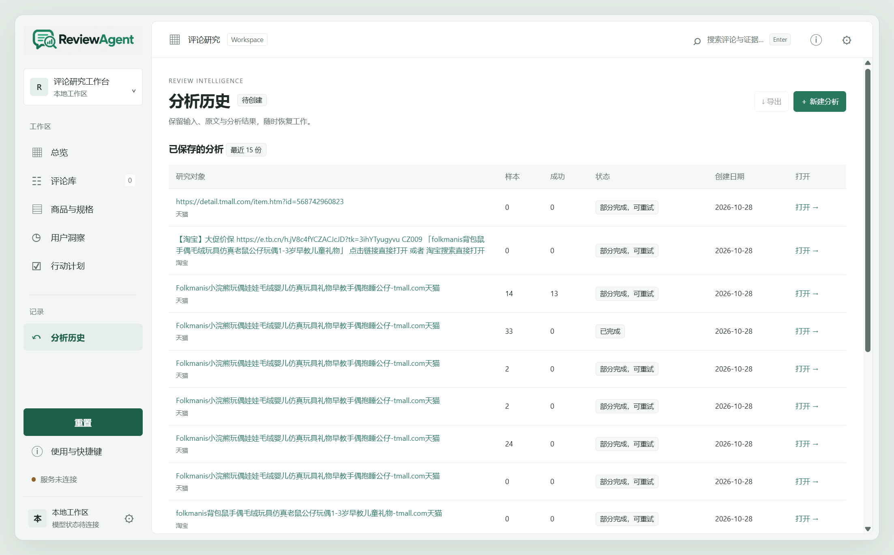
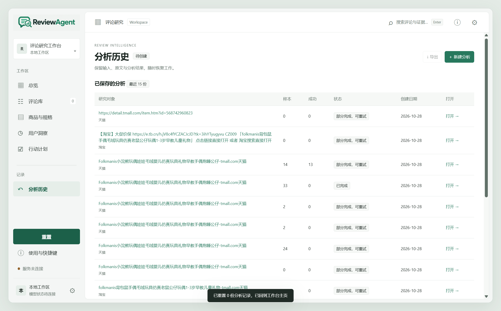

1
采不全
详情页默认只给预览，其余折叠隐藏。工作台用页面自身的评论接口分页取数，按实际总数采集，缺口写清楚。
平台把评价折叠、筛选、排序，运营看到的往往是十几条精选。真正影响决策的信息散在原文里，靠人工翻不现实。
详情页默认只给预览，其余折叠隐藏。工作台用页面自身的评论接口分页取数，按实际总数采集，缺口写清楚。
几百条原文不可能逐条读。逐条分析后按情绪、疑点、可信度归类，需要复核的单独挑出来。
痛点必须能在原句里核对。卖点、话术、选题和行动清单都带着证据编号，人工改过会保留。
每一步都能看到实际数量、失败原因和缺口，不用猜平台到底有没有评论。


不是又一个评论爬虫，而是从采集到行动的完整链路；每个结论都能回到原文。
淘宝/天猫、京东、小红书，同一份研究里分组比较；来源按平台计，不按链接数虚增。
独立配置保存登录状态，扫码与身份校验由人完成；同平台串行，触发限制立即停止。
每次分析先预留再计费，评论与洞察分阶段停止线，重试沿用同一账本。
痛点、卖点、话术都绑定评论编号；无法核对的提议不进结论。
草稿支持人工修改并保留修改；行动清单、原文和完整报告都能导出。
评论、结果与历史存放在本机目录；Key 只在服务内存，重启即清。
下面是截至 2026-10-28 的实际验证结果。没验证过的能力不写在左边。
右侧嵌入本机工作台。需要先在本机启动服务（venv\Scripts\python.exe run_local.py），打开后从“分析历史”进入那份 33 条评论的研究。演示环境不配置模型，只展示已有数据。